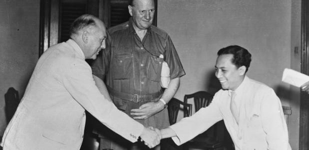
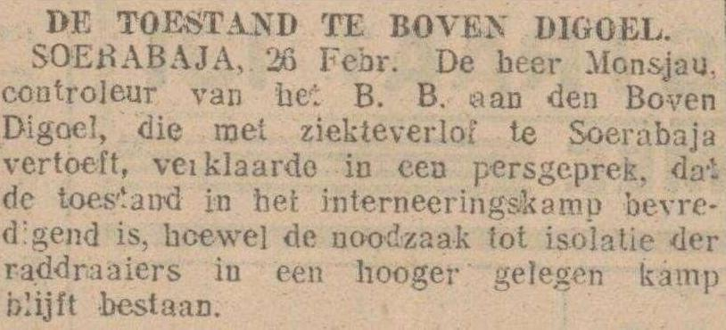

Extreem afgelegen en geïsoleerd
Het besluit viel om een kamp te bouwen, en communisten daarin op te sluiten. Een strafkamp mocht het niet genoemd worden, want die waren bedoeld voor veroordeelde gevangenen. Wat het wel was, werd bewust onduidelijk gehouden. Belangrijk was dat het zo gewoon mogelijk moest lijken. De plek, Boven-Digoel, was een concentratiekamp, vermomd als een ‘normaal’ Indonesisch dorp.
De waarheidsgetrouwe verslagen die de kranten wél haalden, werden veelal ‘communistisch besmet’ genoemd
Bezoek van de pers was aan grote restricties verbonden en contact met de bewoners was niet toegestaan. Journalisten lieten zich doorgaans gemakkelijk een rad voor ogen draaien. Kritische, vaak linkse, verslaggevers lukte het soms toch om rechtstreeks met de geïnterneerden te praten, bijvoorbeeld door patiënten van de kamparts te bezoeken.
‘Zo’n imposante aanblik kende ik zelfs van Sumatra niet. Sumatra, dat bij Java vergeleken nóg meer aan ongerepte en grootse natuur biedt. Wij werden er stil van en voelden ons te midden van dat oerwoud nietig en hulpeloos.’
Zo omschrijft Abdul Chalid Salim zijn aankomst per schip in 1928 in het onherbergzame Nieuw-Guinea, een afgelegen uithoek van Nederlands-Indië. Daar lag het gevangenenkamp Boven-Digoel, waar hij vijftien jaar zou verblijven, geïsoleerd van de buitenwereld.
Salim, de jongere broer van de geleerde en nationalistische politicus Hadji Agoes Salim, was een ambitieuze student die in 1927 op Java was gearresteerd wegens zijn ‘communistische sympathieën.’ Een informant van het koloniale gezag – een ‘agent-provocateur,’ zoals Salim hem noemt – had hem uitgehoord over zijn nationalistische ideeën, en die doorgebriefd aan de geheime dienst.
Eerst zat Salim tien maanden gevangen in Medan, Sumatra, daarna kreeg hij te horen dat hij naar Boven-Digoel zou worden overgebracht. Vlak ervoor mocht hij afscheid nemen van zijn ouders.

Het viel de jongen zwaar, maar zijn vader bleef optimistisch en ‘vol vertrouwen in de rechtvaardigheid van God en de feilloosheid van het Ned. Indische Strafrecht.’ Salim, toen slechts 26 jaar oud, zou zijn ouders niet meer terugzien.
De Tsjechisch-Amerikaanse historicus Rudolf Mrázek spreekt van ‘perverted normalcy’ als hij het leven in Boven-Digoel beschrijft. In zijn biografie over Soetan Sjahrir, de eerste premier van het onafhankelijke Indonesië die ook gevangenzat in Boven-Digoel, schrijft Mrázek dat het kamp ‘voor altijd berucht zou blijven in Indonesië als een van de ergste plekken van verbanning.’
Een afschuwelijk kamp dat werd ingericht als een kunstmatig dorp, met winkeltjes, scholen, een voetbalclub, zelfs met een tennisbaan. Een ‘normale’ omgeving waarin de heropvoeding van mensen met tegendraadse ideeën centraal stond.

Mrázek: ‘”Normaal dorpje-spelen” was het idee, een wreed spel. Het was een publiek geheim dat werkwilligers die ermee instemden te doen alsof ze normale dorpelingen waren, door de autoriteiten welwillender werden behandeld, vooral wanneer er moest worden besloten of een banneling geschikt was om terug naar huis te keren. Wat kon er perverser zijn in de kolonie! Het kamp ‘maakte’ boeren en leerde ze om de grond te bewerken – opdat ze eraan konden ontsnappen.’
Toen Vijftien jaar Boven-Digoel verscheen, reikte Salim het eerste exemplaar ervan uit aan Wim Schermerhorn, oud-verzetsman en de eerste premier na de oorlog (in 1945-1946).
Schermerhorn vond het een ‘welkome aanvulling van onze beperkte en wat eenzijdige kijk’ op de geschiedenis van Indonesië tussen de twee wereldoorlogen, schrijft hij in het voorwoord.

Maar, hoewel hij de publicatie van het boek ondersteunde, deed Schermerhorn dit ‘zeker niet’ ter bevrediging van een gevoel ‘van nationale zelfbeschuldiging, waaraan ik niet lijd.’ Om daarna opgelucht te schrijven: ‘Trouwens, slechts een enkele maal is er sprake van een harde aanklacht tegen het systeem en zeer zelden jegens mensen.’
Zijn woorden weerspiegelen de tijdgeest: Nederland was begin jaren zeventig niet toe aan kritische beschouwing van de koloniale periode.
Zo sprak dagblad Trouw in een recensie van een ‘belangrijk boek’ maar betitelde het het kamp zelf slechts als een ‘wonderlijke samenleving.’ Van enig debat of Nederland wellicht excuses moest aanbieden aan overlevenden als Salim, was destijds geen sprake.
Hoe sterk de behoefte aan autonomie destijds was, bleek in 1926 en 1927 toen in Java en later West-Sumatra nationalisten en communisten in opstand kwamen tegen het koloniale bewind.
Van een goed georganiseerd verzet was geen sprake; de opstand beperkte zich tot fragmentarische rietbranden en sabotages. Maar de onrust maakte het koloniale gezag pijnlijk duidelijk dat het met 200.000 Nederlanders tegenover 60 miljoen Indonesiërs sterk in de minderheid was.
Met de rest – uiteindelijk 1.300 mannen en vrouwen – wist het koloniale gezag zich geen raad De paniek bij het gezag was zo groot, dat het in die jaren 13.000 mensen liet arresteren. Vaak was onduidelijk of zij überhaupt iets met het verzet te maken hadden gehad. Vier mensen werden ter dood veroordeeld en opgehangen.
Een deel, zo’n 4.500 mensen, werd schuldig bevonden aan samenzwering tegen de Nederlandse overheid, en veroordeeld tot een gevangenisstraf. Het grootste deel kwam na een paar maanden alsnog vrij.
Met de rest – zo’n 800 mannen en vrouwen, wat door latere arrestaties aangroeide tot 1.300 – wist het koloniale gezag zich geen raad. Bij deze mensen was er geen juridisch overtuigend bewijs dat ze iets strafbaars hadden gedaan, terwijl de autoriteiten er wel van overtuigd waren dat ze communistische of nationalistische sympathieën hadden.
Het besluit viel om een kamp te bouwen, en communisten daarin op te sluiten. Een strafkamp mocht het niet genoemd worden, want die waren bedoeld voor veroordeelde gevangenen. Wat het wel was, werd bewust onduidelijk gehouden. Belangrijk was dat het zo gewoon mogelijk moest lijken. De plek, Boven-Digoel, was een concentratiekamp, vermomd als een ‘normaal’ Indonesisch dorp.
De locatie: het Nederlandse deel van Nieuw-Guinea, een reusachtig eiland, bedekt met uitgestrekt regenwoud en aan de noordzijde begrensd door een bergketen met scherpe toppen tot 5.000 meter. De bewoners waren Papoea’s: een volk waarvan weinig bekend was, maar dat zou bestaan uit gevaarlijke koppensnellers.
Aan de zuidkust van het eiland, op de Nederlandse helft van het eiland, lag de monding van de rivier Digoel. Vijfhonderd kilometer stroomopwaarts, in het hart van het onverbiddelijke oerwoud, moest het kamp komen, zo was besloten, vanwege de vele voordelen.
‘De Hollandse kapitein wees de modderige kust aan, en de modderbanken die het bevaren van de rivier bemoeilijkten. Gnuivend om het lot van zijn passagiers om verbannen te zijn naar deze woeste uithoek van de wereld, zei hij; ‘Een fijn modderlandje waar jullie heen reizen, geef mij Mokum maar!’ Abdul Chalid Salim kwam er in 1927 aan. Bij het opvaren van de rivier beseften hij en de andere gevangenen goed wat hun ballingschap inhield, wat sommigen tot wanhoop dreef. Salim beschrijft hoe ternauwernood kon worden voorkomen dat een van zijn medegevangenen overboord sprong om zich te verdrinken.
Bezoek van de pers was aan grote restricties verbonden en contact met de bewoners was niet toegestaan. Journalisten lieten zich doorgaans gemakkelijk een rad voor ogen draaien. Kritische, vaak linkse, verslaggevers lukte het soms toch om rechtstreeks met de geïnterneerden te praten, bijvoorbeeld door patiënten van de kamparts te bezoeken.

Salim en zijn medegevangenen hoopten dat de verslagen in Nederland tot protest zouden leiden. Maar de paar waarheidsgetrouwe verslagen die de kranten wél haalden, werden niet zelden ‘communistisch besmet’ genoemd, waarbij de journalist gold als ‘sympathisant.’
De Japanse bezetting van Nederlands-Indië luidde het einde van het kamp in. Salim en de andere gevangenen werden in 1943 per vliegtuig overgebracht naar Australië. Omdat ze de status van geïnterneerden hadden, werden ze daar ondergebracht in een krijgsgevangenenkamp, omgeven door prikkeldraad en mitrailleurs. De Nederlandse luitenant-gouverneur-generaal H.J. van Mook, die er op bezoek kwam, zou in 1949 over de oud-Digoelgangers schrijven dat een ‘principiële fout’ is gemaakt doordat de interneringsmaatregel ‘géén tijdelijk karakter’ had. ‘Die fout wordt nóg groter, indien de internering geschiedt in een afgelegen oord.’ ‘Er waren onder de ruim duizend mensen talrijken van wie men zich afvroeg, met welk doel ze eigenlijk nog afgezonderd werden gehouden,’ vervolgde hij. ‘Een aantal hunner was apathisch geworden; anderen gingen gewoon weer aan de arbeid. Er bleef natuurlijk een verbitterde en ontwortelde kern over, die – sterk communistisch gekleurd – veel heeft bijgedragen tot de verslechtering van onze naam en positie in Australië.’
Het was ernstige kritiek op de voorgangers van de gouverneur-generaal, die de geïnterneerden al die jaren hadden laten wegkwijnen. Maar op het moment dat het boek van Van Mook verscheen had de Nederlandse overheid het te druk met de Indonesische onafhankelijkheidsoorlog om zich het lot van de geïnterneerden aan te trekken. Het leek erop dat Salim en de andere gevangenen opnieuw vergeten zouden worden, dit keer in een ander strafkamp. Salim besefte dat hij grotere kans had als hij de Nederlanders passeerde en zich direct tot de Australische overheid zou richten. Hij trad naar voren als woordvoerder van de gevangenen en legde hun situatie uit aan een Australische vertegenwoordiger van de regering. Er volgde onmiddellijk reactie, hoewel deze hen voor een vreemde keuze stelde: de regering wilde hen weliswaar vrijlaten, maar alleen op voorwaarde dat zij zich zouden aansluiten bij de Australische reservisten. Salim zag geen andere uitweg en ging akkoord. Hij verhuisde van het krijgsgevangenenkamp naar een legerbasis in het dorp Toowoomba, vlakbij Brisbane.